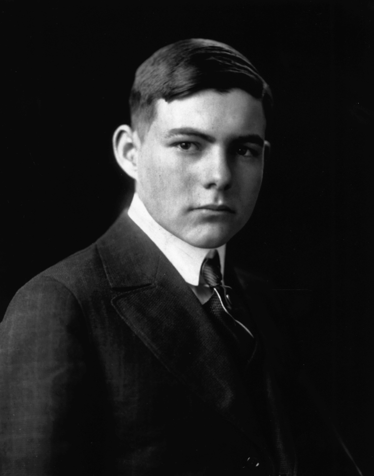
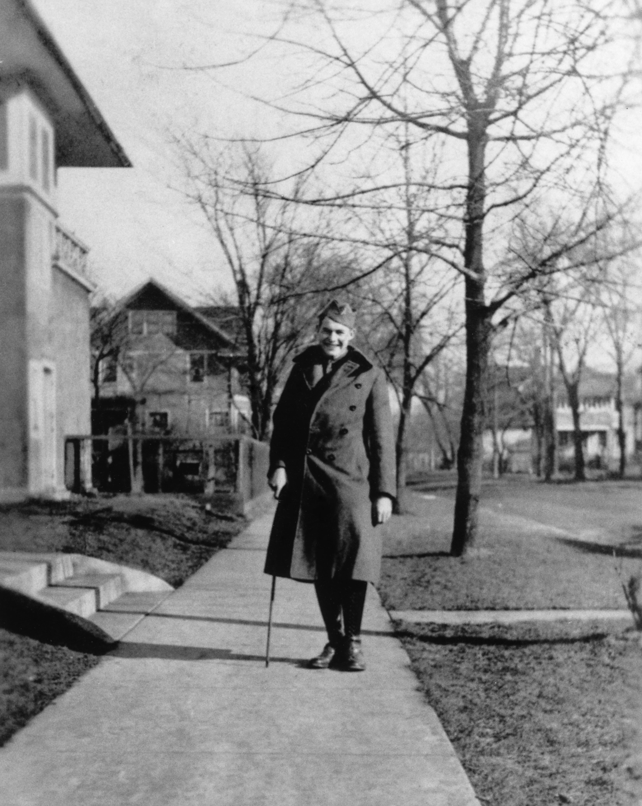
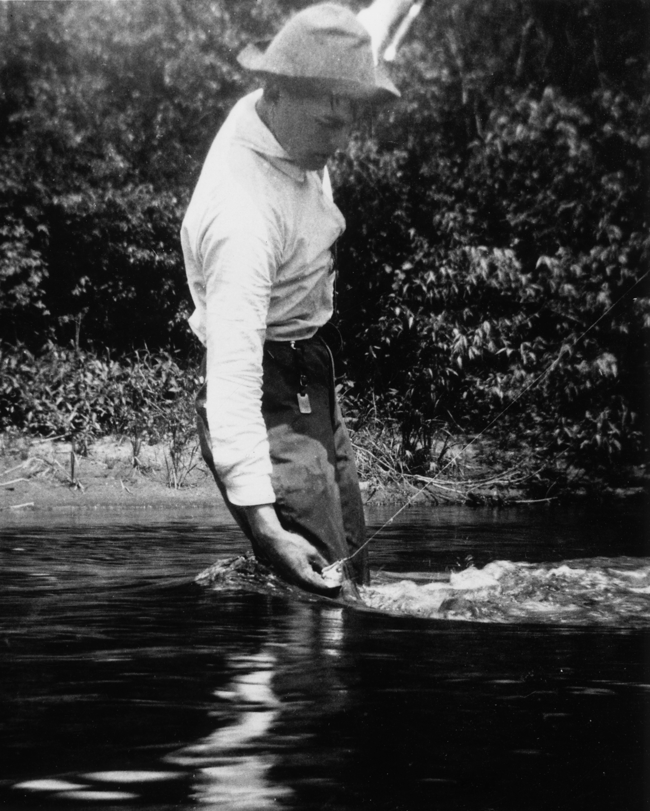
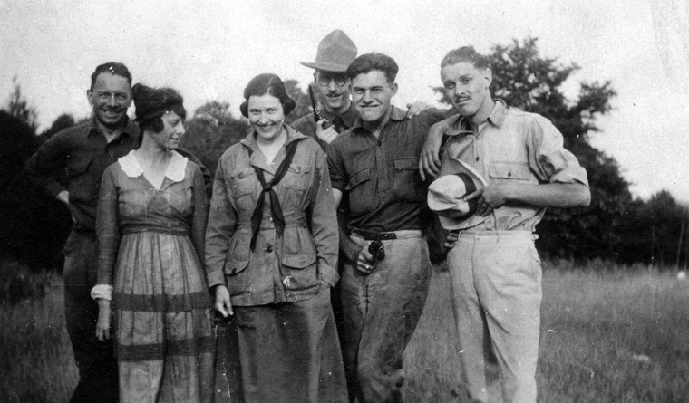
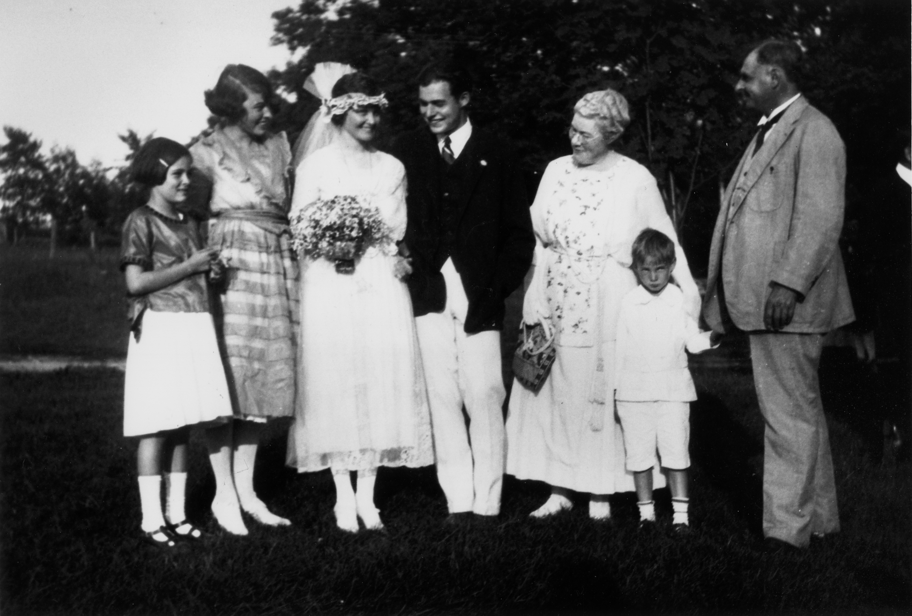

The notion of Oak Park, Illinois author Ernest Hemingway (1899–1961) as a rugged, drunken playboy who shot himself to death oversimplifies Hemingway’s legacy. The truth, according to Hemingway scholars, puts this sordid reputation into sharper context. Ernest Hemingway’s Chicagoland years provide vital, pressing clues about his practices as well as his self-made, final, suicidal solution. Was Ernest Hemingway’s life in Chicago fundamental to his writing?
“Yes,” comes the unequivocal answer from Nancy Sindelar, Ph.D., Oak Park author of Influencing Hemingway: The People and Places That Shaped His Life and Work and Hemingway’s Passions: His Women, His Writing, His Wars, who also guides tours through young Hemingway’s Oak Park home. Dr. Sindelar, board member of the Ernest Hemingway Foundation of Oak Park, notes that Hemingway lived in Oak Park until he was 18.
“His first six years were in his birthplace home,” she said, “then he moved into what’s called the boyhood home until he finished high school and he was at his boyhood home on North Kenilworth in Oak Park until he was 18.”
Sindelar explained that Hemingway’s parents were religious. Several among his Protestant family members attended the Christianity-based Wheaton College.
“Ernest grew up with a very strict set of rules,” she said, “and his father and mother didn’t believe in smoking, drinking, dancing or card playing. They were very religious. If the children did something wrong, they were told to get down on their knees and thank God for forgiveness.”
The Hemingway kids—Ernest was second born of six children—were expected to be doing “something worthwhile,” she said, such as reading, hunting or fishing.
“That was important to Ernest [Hemingway] because—particularly in the early years of his career, the Paris years, when he was getting rejection letter after rejection letter—he kept working. He didn’t give up. A lot of people would have said, forget this writing business or, I’m going back to Chicago.”
Ernest Hemingway could have gotten a job as a magazine writer, Sindelar told me, but he wanted to pursue writing fiction.
“For a while he wasn’t sure whether he was going to be a poet, a short story writer, or a novelist, but he kept working at it. And the other thing is that he never went to college. His senior year in high school, he took journalism and his journalism teacher ran her classroom like a newspaper office. By the time he finished high school, he decided he wanted to go out and be a journalist and he got a job at the Kansas City Star.”
Throughout his entire life, whenever Hemingway wanted to make money or get involved in a war and witness or experience action, he fell back on the journalism experience he’d gained at Oak Park High School and his seven months at the Kansas City Star. Sindelar, whose children attended Oak Park High School, where she taught American literature, said that, during Ernest Hemingway’s education, Oak Park High offered comprehensive education. Hemingway was editor of the school’s newspaper. He wrote—and published—three short stories in the school’s literary magazine. He was on the swimming team. Ernest Hemingway also managed the track team. The school was large—“it’s still large today,” she said—and he studied English, math and Latin. Hemingway also spent summers in Michigan, too.

This meant family visits to Walloon Lake, a small lake located fairly close to Lake Michigan where he learned to hunt and fish, a skill which would draw him to waters in Key West and Cuba. Water is central to Ernest Hemingway’s life and writing. This, too, tracks to Chicago.

As Hemingway’s Boat author Paul Hendrickson told me during a recent interview, Ernest Hemingway lived close to “the Des Plaines River, which was one linear mile from his front porch.” From home, Hendrickson said, Hemingway “would go to that river, which is along the forest preserve. At the turn of the [19th] century, that was still kind of wild country.”
Oak Park was the first town west of Chicago. Within a mile of either side of the Des Plaines River, there is forest.
“As a very young child, he was taken there. His father sat him along the [river] bank and, pretty soon, when he was a little older, maybe five or six or seven, he was able to walk there and get in the water with a fishing rod.”

Hemingway would later paddle in a canoe.
“I could never be lonely along the river,” Hendrickson quotes Hemingway as writing in A Moveable Feast. “It’s eight words,” Hendrickson pointed out, underscoring Hemingway’s legendary concision. “To me, it is critical in explaining a lot of Hemingway because it presupposes how lonely he was. He was lonely as a writer. He was lonely as a human being. He was subject to highs and lows and he became bipolar, but he could go to the river and see that moving peace of water, or, watching an old Parisian fisherman, he could never be lonely along the river.”
Hemingway returned one last time to Chicago for his father’s funeral after his dad, a medical doctor, killed himself.
“There’s a history of depression in the Hemingway family,” Sindelar said. “His father suffered from depression and—after his investment in Florida real estate went south—he committed suicide. Ernest suffered from depression. His fourth wife took him to the Mayo Clinic, where they did electric shock therapy that erased his memory. The most important thing in his life was his writing. When that was taken away, he felt he lost his purpose in life.”
Oak Park’s Sindelar argues that, in The Sun Also Rises, her favorite Hemingway novel, there’s “this kind of Oak Park in him and his mother said it was the filthiest book she ever read and his father wrote Ernest Hemingway a letter saying, ‘you are a wonderful writer, but we hope you’ll come up with different subject matter in the future.’ So he spent the rest of his writing career trying to please his parents [in Oak Park].”
“The title’s there in the Bible,” she said: “‘The sun rises, the sun falleth, but the earth shall endure forever.’ If you go through his literature, particularly The Old Man and the Sea, there are a lot of biblical references. The old man is a kind of a Christ figure.”
Being commercially successful as a young author had distinct advantages, though these, too, posed a challenge for the young Chicagoland writer, who, through his writing, became a mythical figure of hypermasculinity—to certain types of women, according to Dr. Sindelar.
“He was sort of a sex object,” she said. “I mean, he was a good storyteller when he was young, he was handsome, and he projected this very masculine image. I think women had this tendency to think, well, yeah, he cheated on his first wife—but it’ll be different with me. But he did cheat.”
Hemingway’s struggle, she contends, affords his literary credo:
“His books are almost formulaic. Once you start to see this [theme of] grace under pressure—that everybody’s gonna [eventually] die—that life’s a matter of learning and knowing how you face tough situations, which is why he was so fascinated with war—he kept going back to war—” it’s easier to understand who was Ernest Hemingway.
During the Communist takeover of Cuba in 1959, Hemingway’s beloved home and property—the archives of his writing—were seized by the state. Everything he loved was taken from him, and this was before he was taken to the Mayo Clinic for shock treatment that erased his memory. According to PBS broadcaster Ken Burns, everything Hemingway owned and loved was seized and expropriated by Communist Cuban dictator Fidel Castro. Hemingway never got what he owned back. This left Hemingway in Idaho when Idaho was the B plan—merely an occasional place—and robbed him of the place he loved the most.
“The house [in Cuba] was intact and all of his things were there and Mary Hemingway negotiated with Castro to come back and take personal items out of the house and go to the bank and take manuscripts and things. And she loaded up a shrimp boat with stuff and if you go to the house, the furniture is there and his clothes are still in the closet, and, everything is pretty intact but it’s in [Communist Cuba]. He knew the ugliness of revolution.”
Hemingway’s suicide followed.
“He knew he wouldn’t be going back [to Cuba] after [President Kennedy’s military debacle at] the Bay of Pigs,” she said. “Then, his buddy Gary Cooper, who lived in Sun Valley, died of cancer. They were good friends. So [the catalysts to Hemingway’s suicide were] Bay of Pigs, then the death of Gary Cooper—which was a very important friendship—who played the role of Robert Jordan in For Whom the Bell Tolls but they were also hunting buddies. They both lived in Sun Valley and hunted together and their wives were friends and all of that. He had told Martha Gellhorn exactly how he would do it years before he did it. And he had tried it several times in Sun Valley. Mary had stopped him, or called a neighbor who stopped him, and, at one point, when they were going up to the Mayo Clinic, he tried to walk into the propeller of an airplane until the pilot turned off the engine. So, I mean, he [had] tried it. People tried to stop him. I was writer in residence in Sun Valley in the winter of ’21. I stayed in that house. People [there] knew he was in trouble. They saw his decline but it was very difficult to know what to do. It just came. His life was not what he wanted it to be. So he ended it.”
As a youth, Ernest Hemingway had read short stories by O. Henry and Jack London, who was one of his favorite authors, and the classics. He read Shakespeare. But he liked Jack London’s stories about the outdoors.
“He had a lifelong love of music,” Sindelar noted with a jolt of enthusiasm. “In any of one of his houses you go to, you’ll see a record player and all these records and he had a wonderful art collection. His mother painted and, then, when he was in Paris, Gertrude Stein said, you know, you should collect art. And that’s when the Impressionists were experimenting. The Hemingway family has this valuable art collection.”
This provides a twist about Hemingway in Chicago. For all the Puritanism of the family’s ban on dancing, drinking, smoking and card playing, he was not made to feel that there was anything unbecoming about enjoying art and music.
“His mother was a force,” Sindelar said of the driver of Hemingway’s artistic exposure in boyhood.
Hemingway’s Boat author Hendrickson agrees.
“His mother and his parents both took the [Hemingway kids] into the city from Oak Park to museums, especially the Museum of Science and Industry and the Museum of Natural History, so he certainly knew Chicago,” Hendrickson said. “As a young man, he worked briefly in Chicago for a business publication way before he was known—this is before he went to Paris and met Hadley, his first bride, in Chicago—so there’s a Chicago consciousness in him, but you don’t find in his letters very much about Chicago. No, New York supplanted Chicago in many, many ways. And of course, when he lived in Florida, the city he would go to would be Miami. He was in all the cities of the world, all those great European capitals, but how much is Chicago embedded in his consciousness? I’m thinking not so much. Yet he was born on the edge of Chicago, and he experienced Chicago as a young person.”

At the age of 29, Hemingway came back for his father’s funeral, which Hendrickson noted was a milestone.
“He was on his way on a train when he got a telegram that his father had shot himself,” he said. “So he changed trains and left his firstborn in the care of someone else and took the train west to be with the family, pull the family together and unite the family.”
Hemingway had returned to Oak Park after World War One. He had lived in the family home and was around Chicago. Did he long for Chicago?
“Not so much,” Hendrickson said. “[His father’s] 1928 Smith and Wesson midday suicide and all of these things in [his] consciousness are not going to make you pine for the city. He was from Chicago for the rest of his life. As time went on and as he became a citizen of the world, not just a citizen of Chicago or a citizen of the Midwest or a citizen of Illinois, he began to sort of understand that Chicago was provincial. Chicago was [like] an overgrown cow town, not that he would bad mouth it that way, but I think he saw it while growing up as a certain kind of Athens—a colossus—and, later on, his perspective changed and he saw Chicago in a different light.”